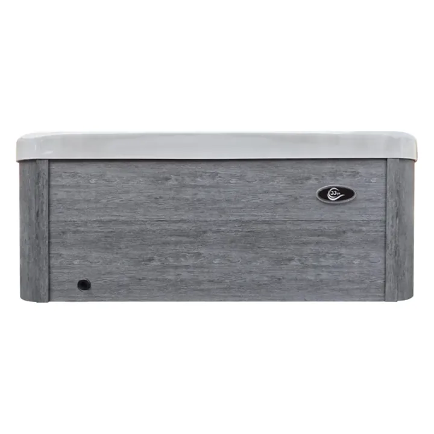

Plug & Play · 2 osebi
JJSPA Gamma 220
Bazen za dva z dvema ležiščema na 1,4 × 2 m, zato je primeren tudi za balkon ali manjšo teraso. Priklopite ga v običajno vtičnico Schuko.
- 1400 × 2000 × 780 mm
- 2 ležišči
- 44 hidromasažnih šob
- 550 litrov
- Wi-Fi